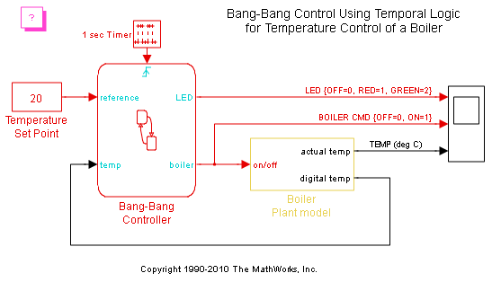
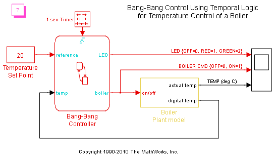

時相論理を使ったバンバン制御
このデモでは、Stateflow® を使用してボイラーのバンバン温度制御システムをモデル化する方法を示します。 ボイラーのダイナミクスが Simulink® でモデル化されます。
Bang-Bang Controller Stateflow チャートは、Stateflow 内の関数およびサブチャートの使用方法を示します。
このデモでは、Stateflow® を使用してボイラーのバンバン温度制御システムをモデル化する方法を示します。 ボイラーのダイナミクスが Simulink® でモデル化されます。
Bang-Bang Controller Stateflow チャートは、Stateflow 内の関数およびサブチャートの使用方法を示します。
